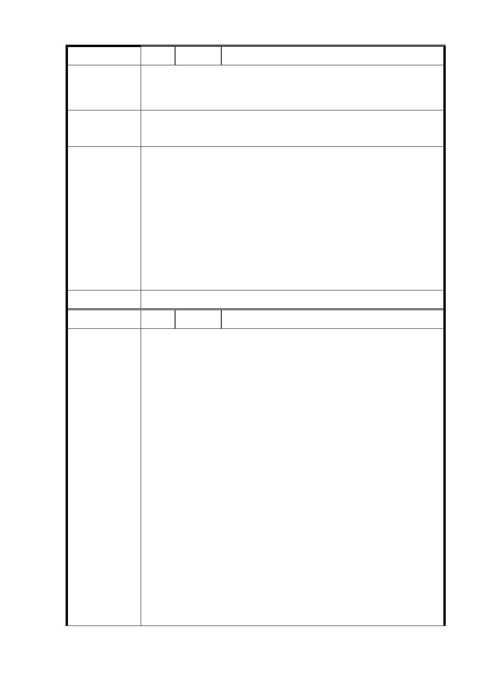

編 號 3 陳情人 何○華、鄭○靜
一、 找出三贏方案，多重方案供比較選擇。
陳 情 理 由 二、 解除居民安全疑慮。
三、 多保留大型綠地(居民需要公園活動場地)。
將規劃範圍擴大，納入 50 公尺範圍內私地，辦理公辦都更
建議辦法
共榮發展。
一、 公共開放空間如編號 1。
二、 本府將於本案規劃設計發包後，優先要求設計團隊進
行地質鑽探，以維公共安全。
市 府 回 覆 三、 考量基地周邊多為 4、5 層老舊公寓，擬透過本地區公
意 見 有土地先開發，帶動未來周邊社區辦理都市更新，並
供作民間都更時之中繼住宅使用，提升地區生活環境
品質，另未來如地區有都市更新需求，市府亦將配合
協助諮詢。
委 員 會 決 議 同編號 1
編 號 4 陳情人 陳○霞
一、 信義區公所現址是公有土地，屬機關用地，使用就要
以公共利益為主。
二、 地層脆弱不穩的廣慈要開發，還有捷運都更的開發，
信義區公所又要加入，太擠了!地層構成建築體超荷的
壓力，過度頻繁開發是危險的。
三、 廣慈地層破碎每年都在下陷，地層滲水鬆軟開發過程
震動一定會增加，影響附近房子，如：信義路六段在
捷運施工中，就有當地房子傾斜龜裂，房子是很難恢
復的，請政府重視。
陳情理由
四、 區公所計畫拆遷到廣慈福德街84巷口附近，以前柏德
在BOT開發設計，預設此地是沒作建築用地，他們知道
這裡是危險地帶。公所因海砂屋要拆遷，將來假使公
所遷到此地，因而發生傾斜龜裂，又要拆遷，那就浪
費公帑，請都發局重視。
五、 公園綠地視野是要一大片完整。不是分布在零星巷
道，不是一小塊一小塊。
六、 請不要再說經濟部說：信義區沒有斷層就帶過。所以
懇請柯市長一定要撥款給都發局作廣慈園區「地質檢
測」用。請公信力的地質技師專家們作地層鑽探工作
要誠實。公開透明告訴大家哪裡是安全地帶，那裡是
-9-